노트
어휘: 다음 어휘를 노트에 기록하세요. 학습 활동을 완료하면서 각 어휘의 정의와 핵심 용어를 채워 넣으세요.
- 전기(electricity)
- 자기(magnetism)
- 회로(circuit)
- 저항기(resistor)
- 도체(conductor)
- 절연체(insulator)
- 옴(ohm)
- 쿨롱(coulomb)
- 전류(current)
- 전하(electric charge)
- 암페어(ampere)
- 볼트(volt)
- 전위차(electric potential difference)
- 감전(electric shock)
- 전기 위험(electric hazard)
- 저항(resistance)
- 부하(load)
회로 만들기
이전 수업에서 전기 회로에 대해 배운 적이 있을 것입니다. 다음 장비로 간단한 회로를 어떻게 만들 수 있는지 생각해 봅시다.
- 전선
- 배터리
- 전구
- 스위치
직접 해보기!
다음 시뮬레이션을 사용하여 전구를 켜 보세요. Start 버튼을 눌러 새 탭에서 시뮬레이션을 여세요.
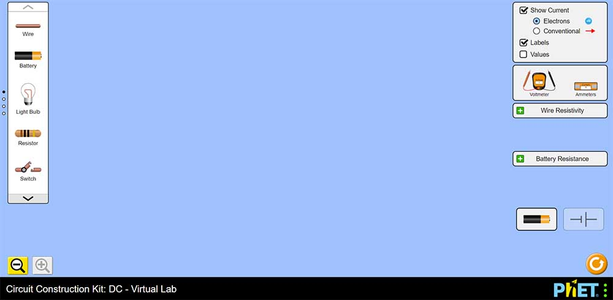
Start (새 창에서 열림)1. 전구를 켤 수 있었나요?
2. 전선 대신 다양한 물질(화면 왼쪽 메뉴 상자)을 사용하여 회로를 만들고 전구를 켜 보세요.
3. 어떤 물체가 전선을 대체하면서도 전구를 켤 수 있는지 서술하세요.
스위치, 클립, 동전.

소개
전기는 우리 생활에서 중요한 역할을 하지만, 종종 당연하게 여겨집니다. 텔레비전, 컴퓨터, 전자레인지, 그리고 전기를 사용하는 다른 모든 가전제품 없이 생활한다면 어떨까요? 전기에 대한 우리의 의존은 상당한 비용을 수반합니다. 전력을 공급하는 발전소는 천연가스를 태우고, 방사성 물질을 사용하고, 강을 막고, 환경을 파괴합니다. 명백한 해결책은 전기 사용량을 줄이고 필요한 만큼의 깨끗한 에너지원을 찾는 것입니다. 이를 개인적으로든 사회적으로든 달성하려면, 전기가 어떻게 작동하는지 이해해야 합니다. 이 학습 활동에서는 전기 회로, 전위차, 전류를 살펴봅니다.
전하
전기는 실제로 원자에 결합되지 않은 전자(electron)로 구성됩니다. 이 전자들은 가정용 에어컨부터 스마트폰까지 모든 것에 전기 에너지와 전력을 전달하는 데 사용됩니다. 정전기(static electricity)(건조한 겨울날 받는 충격)와 달리, 이 모든 장치를 작동시키는 전기는 회로를 통해 이동하며 간단한 규칙을 따릅니다.
과학자들이 전기를 연구하기 시작했을 때, 양전하와 음전하를 가진 물체가 확인되었습니다. Benjamin Franklin은 1752년에 번개와 전기 사이의 관계를 발견했습니다. 그는 양전하가 물체에서 물체로, 전선을 따라 흐른다고 생각했습니다. 이후에, 실제로는 음전하를 가진 전자가 구리선과 같은 도체를 통해 흐른다는 것이 발견되었습니다. 양전하가 흐르는 전기 회로를 설명하기 위해 만들어진 모든 규칙은 오늘날에도 여전히 유용합니다. 이는 전기 전하가 회로를 통해 이동하는 것에 대해 두 가지 방식으로 이야기할 수 있음을 의미합니다: 하나는 전자 흐름(electron flow)이라 하고, 다른 하나는 관례적 전류(conventional current)라 합니다.
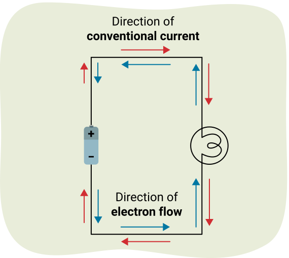
전하의 흐름
관례적 전류: 전류가 배터리의 양극 단자에서 음극 단자로 흐릅니다(양전하가 이동하는 방향). 다이어그램을 참조하세요.
전자 흐름: 전류가 배터리의 음극 단자에서 양극 단자로 흐릅니다(전자가 이동하는 방향). 다이어그램을 참조하세요.
산업(예: 전기 공학)에서와 마찬가지로, 이 과정에서는 회로를 그리고 생각할 때 관례적 전류 흐름을 사용합니다.
전하(Q) 계산하기
전자는 음전하를 가지고 양성자(proton)는 양전하를 가집니다. 양성자가 전자보다 훨씬 큰 질량을 가지고 있지만, 전하의 크기는 둘 다 같습니다.
전하의 기호는 Q입니다. 전자 하나의 전하는 -1.6 × 10-19 C입니다. 전하의 단위는 C(쿨롱(coulomb))입니다. 양성자 하나의 전하는 +1.6 × 10-19 C입니다. 이것은 가장 작은 전하량이며 기호 e로 표시합니다.
기본 전하(elementary charge) (e)
e = 전자 또는 양성자 하나의 전하 = 1.6 × 10-19 C
전자를 얻은 물체는 양성자보다 전자가 더 많으므로 음전하를 갖게 됩니다. 전자를 잃은 물체는 양성자보다 전자가 적으므로 양전하를 갖게 됩니다.
전자가 한 물체에서 다른 물체로 이동한 수를 알면, 각 물체의 전하량(Q)을 구할 수 있습니다.
공식
전하량
Q = Ne
여기서:
- Q = 전하량, 쿨롱(C) 단위로 측정.
- N = 잃거나 얻은 전자의 수 (전자를 잃으면 Q는 양수, 전자를 얻으면 Q는 음수).
- e = 1.6 × 10-19 C
예시: 정전기와 전하에 대한 다음 문제를 검토하세요.
Ganga는 양모 스웨터와 실크 블라우스를 건조기에 함께 넣었습니다. Ganga가 꺼냈을 때 스웨터와 블라우스가 서로 붙어 있었습니다. 일부 전자가 양모에서 실크로 이동하여 정전기적 인력(electrostatic force of attraction)이 생성되었습니다.
1. 어떤 물체가 양전하를 띠게 되었나요?
양모는 전자를 잃었으므로 양전하를 띠게 되었습니다. 실크는 전자를 얻었으므로 음전하를 띠게 됩니다.
2. 9.75 × 1023개의 전자가 양모에서 실크로 이동했다면, 양모와 실크의 전하는 얼마인가요?
주어진 값:
미지수:
방정식:
풀이:
결론:
실크는 전자를 얻었으므로 -156,000 C의 전하를 가집니다. 양모는 전자를 잃었으므로 156,000 C의 전하를 가집니다.
전류 측정하기
도시 도로의 교통 흐름을 측정하는 임무를 맡았다고 가정해 봅시다. 도로변에서 스톱워치를 들고 10분 동안 50대의 차를 세었습니다.
50대/10분 = 5대/분. 흐름 속도는 분당 5대입니다.
이와 마찬가지로, 도체를 통해 한 곳에서 다른 곳으로 전하가 흐르는 것을 전류라 합니다.
전류 (): 1초(s) 동안 한 지점을 통과하는 전자의 수.
공식
전류
전류의 단위는 암페어(A)입니다. 1 암페어는 초당 1 쿨롱과 같으므로, 전류를 구하려면 시간을 초 단위로 측정해야 합니다.
전류의 예시
예시 1: 3 A = 3 쿨롱/초 = 3 C/s
예시 2: 0.001 A = 1 밀리암페어 = 0.001 C/s
전류계(ammeter)
다음과 같은 전류계라는 기기로 회로의 전류를 측정합니다.
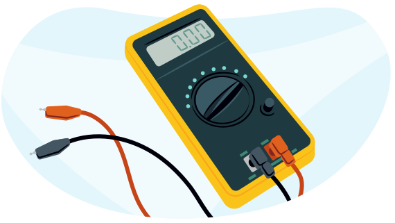
예시 1: 전류
전류계가 5 암페어(5 A)의 전류를 기록했습니다. 1분 동안 전류계를 통과하는 전하량은 몇 쿨롱인가요?
참고: 시간은 초 단위여야 합니다. 1분 = 60초.
주어진 값:
미지수:
방정식:
풀이:
결론:
1분 동안 전류계를 통과하는 전하량은 300 C입니다.
예시 2: 전류
충전기가 충전식 배터리를 완충하는 데 12시간이 걸립니다. 8.1 × 1021개의 전자가 배터리를 통과한다면, 배터리를 통과하는 전류는 얼마인가요?
참고: 시간은 초 단위여야 합니다.
12시간 = 12 × 60 × 60 = 43,200초
주어진 값:
미지수:
방정식:
풀이:
먼저, 전자의 수를 사용하여 배터리를 통과하는 전하량을 구합니다.
그 다음 전류 공식을 사용합니다.
결론:
배터리를 통과하는 전류는 입니다.
전위와 전위 에너지
전자는 도체를 통해 이동하여 전류를 형성합니다. 그러나 전하는 스스로 흐르지 않습니다. 무엇이 전자를 도체를 통해 이동하게 할까요?
전자는 배터리를 통과하면서 에너지를 얻습니다. 전자가 회로의 한 지점에서 다른 지점으로 이동할 때 에너지를 잃습니다. 예를 들어, 전하가 전구가 포함된 회로를 통해 흐를 때, 전하의 에너지는 전구를 통과하면서 감소하고 전기 에너지는 빛과 열로 변환됩니다.
1 쿨롱의 전하가 가지는 에너지의 양에는 특별한 이름이 있습니다: 전위(electric potential). 두 지점 사이의 전위 차이를 전위차라고 합니다. 이것을 전압(voltage)이라고도 합니다.
전위 (V): 1 쿨롱의 전하가 운반하는 에너지(E)의 양.
공식
전위
참고: 전위의 단위는 볼트(V)이며, 에너지는 줄(J) 단위로, 전하는 쿨롱(C) 단위로 측정합니다.
전위차 (전압)
배터리는 전위 값에 따라 판매됩니다. 1.5 V 또는 9 V 배터리를 사러 간 적이 있을 것입니다. 1.5 V 배터리의 경우, 각 쿨롱의 전하가 배터리를 통과할 때 1.5 J의 에너지를 받습니다. 9 V 배터리의 경우, 각 쿨롱의 전하가 9 J의 에너지를 받습니다.
전하가 회로에서 전구와 같은 소자를 통과할 때, 높은 전위로 소자에 들어가고 낮은 위치 에너지로 나옵니다. 전위의 차이를 전위차라고 합니다.
두 지점 사이의 전위차는 전압계(voltmeter)라는 기기로 직접 측정할 수 있습니다. 전위차를 측정하려면 전위차를 측정할 회로의 두 지점 사이에 전압계의 단자를 놓기만 하면 됩니다. 다음 그림에서는 전구 양단의 전위차를 측정하고 있습니다.
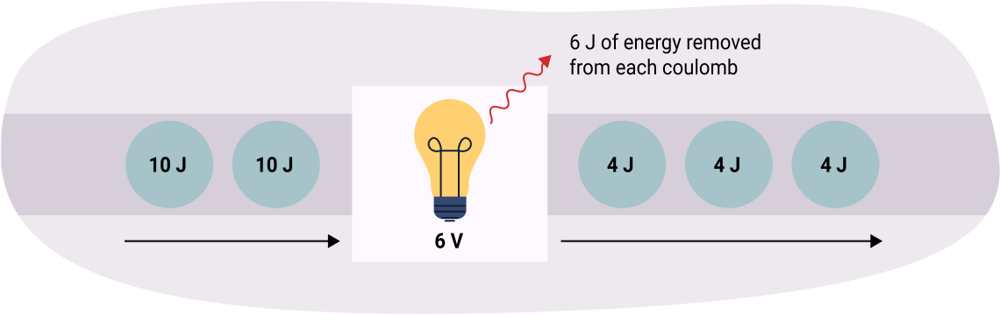
전하는 10 J의 에너지를 가지고 있습니다. 전구를 통과한 후에는 4 J의 에너지만 남습니다. 이는 전하가 전구를 통과하면서 6 J의 에너지가 손실되었음을 의미합니다(에너지가 빛과 열로 변환됨). 각 쿨롱의 전하에서 6 J의 에너지가 손실되면, 전위차는 6 V입니다.
전압계
다음 다이어그램은 토스터 양단의 전위차를 측정하는 전압계를 보여줍니다. 전압계는 120 V를 나타냅니다. 이는 토스터가 각 쿨롱에서 120 J의 에너지를 가져와 열로 변환한다는 것을 의미합니다.
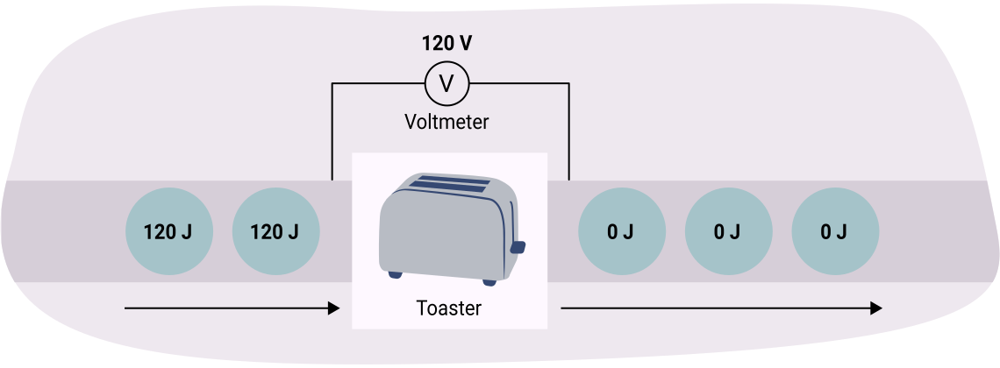
전위 에너지
전위와 전류에 대한 공식을 결합할 수 있습니다.
을 로 재배열할 수 있으므로, 전위 공식에서 Q를 대체하면 새로운 공식 또는 을 얻을 수 있습니다.
공식
전위
또는
노트
노트를 사용하여 다음 각 문제를 풀 수 있습니다. 예시 답안과 비교하여 자신의 이해도를 확인하세요.
전류와 전위 공식을 사용하여 이 문제를 풀어보세요:
1. 50.0 mA의 연속 전류를 3.1 × 103초 동안 공급할 수 있는 9.0 V 배터리에 저장된 에너지를 계산하세요.
다음 표에 주어진 값을 (적절한 기본 단위로) 입력하세요:
| 시간 (t) | 3.1 × 103 s |
|---|---|
| 전류 (A) | 50.0 mA = 0.050 A |
| 전위 (V) | 9.0 V |
| 미지수 | E |
2. 전류와 전위 방정식을 결합하여 배터리에 저장된 에너지를 구하세요.
V와 I의 공식을 결합하면 이 됩니다.
이것을 재배열하면 가 됩니다.
배터리에는 1395 J의 에너지가 저장되어 있습니다.
옴의 법칙
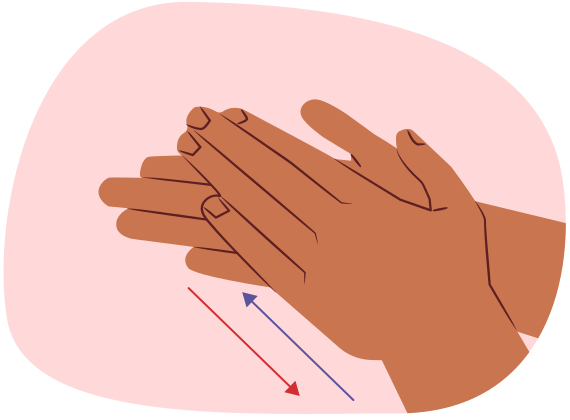
양 손바닥을 맞대고 문질러 보세요(또는 양말을 신은 발이나 맨발로 카펫을 문질러 보세요). 손이 뜨거워지는 것을 느낄 수 있습니다. 마찰이 열을 만듭니다. 양 손바닥을 더 세게 누르세요. 이제 문지르기가 더 어렵고 더 많은 열이 발생합니다. 손 사이의 마찰이 저항을 만듭니다.
전하가 물질을 통과할 때, 반대 작용 또는 저항(R)을 받습니다. 전구나 발열체와 같은 회로의 소자에는 저항이 있습니다. 때때로, 전위차의 강하가 필요할 때 회로에 저항기를 배치합니다. 저항기의 목적은 회로의 전위차를 떨어뜨리는 것입니다.
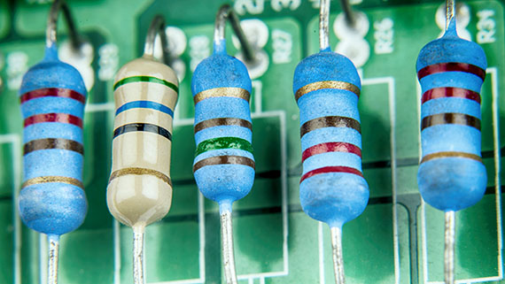
일반적으로 회로에 사용되는 저항기는 다음 이미지와 같이 다양한 색상의 띠가 있는 작은 원통 모양입니다. 띠의 색상과 수는 저항기의 저항 크기를 나타냅니다. 예를 들어, 다음 이미지에서 가장 왼쪽의 저항기에는 빨간색, 빨간색, 갈색, 금색의 네 개의 띠가 있으며, 총 저항이 220 Ω임을 나타냅니다.
저항은 저항을 연구한 독일 물리학자 Georg Ohm(1789-1854)의 이름을 따서 옴 단위로 측정합니다. 옴의 기호는 Ω(그리스 알파벳 문자 중 하나)입니다.
이것은 그리스 문자 오메가(Omega)이므로, Word 또는 Google Docs 수식 편집기에서 \Omega 단축키로 이 기호를 만들 수 있습니다. 소문자 오메가는 다르므로 반드시 대문자 O를 사용하세요.
참고: 1 Ω = 1 V/A.
옴의 법칙은 전위, 전류, 저항 사이의 관계를 설명합니다.
공식
옴의 법칙
V = IR
여기서:
V = 전위 (볼트, V 단위로 측정)
I = 전류 (암페어, A 단위로 측정)
R = 저항 (옴, Ω 단위로 측정)
다음 다이어그램의 회로는 전위차(전압)를 조절할 수 있는 가변 전원 공급 장치(배터리와 유사)를 사용합니다. 전류계와 전압계를 사용하여 저항기 양단의 전위차와 이를 통과하는 전류를 측정했습니다.
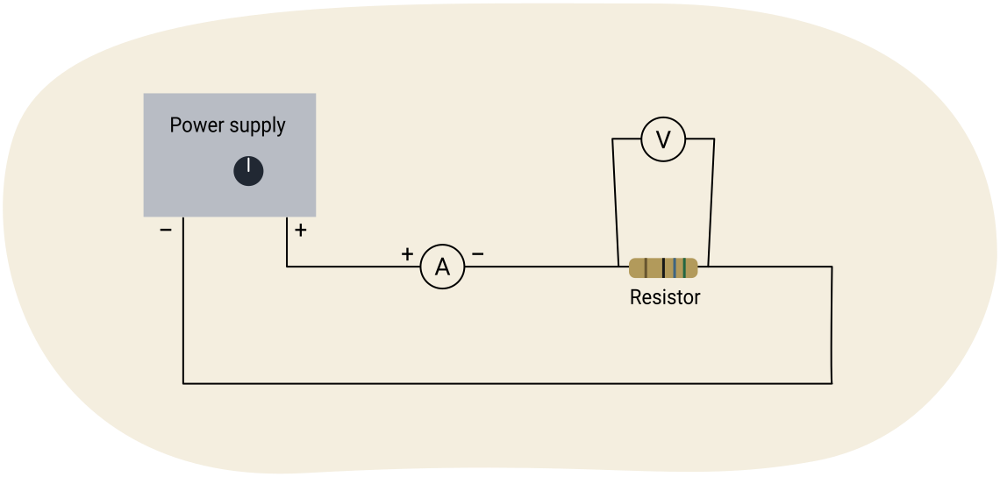
위의 전기 회로 다이어그램을 살펴보고 다음 질문에 답하세요.
노트
1. 옴의 법칙을 사용하여 각 전류와 전위차 측정값 쌍에 대한 저항을 구하세요.
다음 표를 노트에 복사하고 답을 기록하세요. 예시 답안과 비교하여 자신의 이해도를 확인하세요.
| 전위차 (V) | 전류 (A) | |
|---|---|---|
| 1.5 | 0.68 | 2.2 |
| 3.0 | 1.35 | 2.2 |
| 5.0 | 2.3 | 2.2 |
| 6.0 | 2.7 | 2.2 |
| 9.0 | 4.1 | 2.2 |
| 10 | 4.5 | 2.2 |
2. 전위차가 증가하면 전류는 어떻게 되나요?
전류도 증가합니다.
3. 저항 값에 대해 무엇을 알 수 있나요?
전위차와 전류가 변해도 저항 값은 일정합니다.
전압–전류 그래프 사용하기
방금 옴의 법칙을 사용하여 저항을 구했습니다. 전위차와 전류 데이터로부터 저항을 구하는 또 다른 방법이 있습니다. V–I 그래프를 그리면 그래프의 기울기가 저항입니다.
다음은 이전 데이터 표에서 그린 그래프입니다.
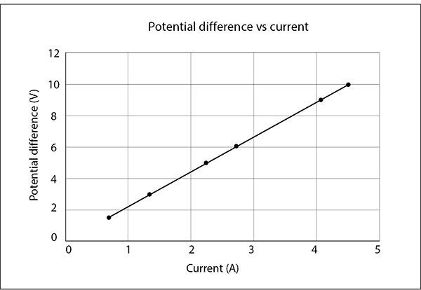
직선 위의 아무 두 점을 선택하고 기울기를 구하세요. 기울기의 방정식은:
직접 해보기!
기울기를 구하고 예시 답안과 비교하세요.
다른 점을 선택했을 수 있지만, 기울기는 거의 같아야 합니다.
점 (1, 2.2)와 (4.5, 10) 사용
기울기가 데이터 표에서 옴의 법칙을 사용하여 계산한 저항과 같다는 것을 알 수 있습니다. 기울기는 저항기가 제공하는 저항과 같습니다.
기울기 = (10 − 2.2) / (4.5 − 1)
기울기 = 2.2 Ω
실험 활동
다음 대화형 활동에서는 저항기의 전압과 전류 사이의 관계를 찾는 실험을 완료합니다. Start 버튼을 눌러 새 탭에서 시뮬레이션을 여세요.
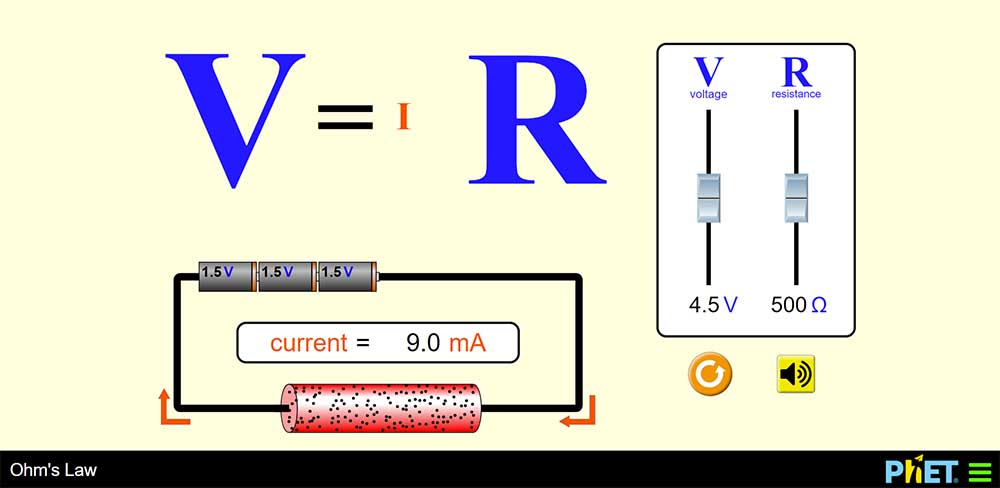
Start (새 창에서 열림)목적: 다양한 저항기에 대한 전압과 전류 사이의 관계를 찾는다.
재료: 전선, 저항기, 배터리, 전류계, 전압계.
절차 및 관찰:
1. 저항기의 저항을 약 1000옴으로 설정하세요.
2. 다음 표를 노트에 복사하세요.
| 전압 (V) | 전류 (A) | 저항 (Ω) |
|---|---|---|
| 0.5 | ||
| 1 | ||
| 2 | ||
| 3 | ||
| 4 | ||
| 5 | ||
| 6 | ||
| 7 | ||
| 8 | ||
| 9 |
3. 표에 표시된 대로 전압을 변경하세요.
4. 옴의 법칙 대화형 시뮬레이션을 사용하여 해당하는 전류를 암페어 단위로 표에 기록하세요.
5. 약 400옴의 저항기로 1~6단계를 반복하세요.
6. 약 40옴의 저항기로 1~6단계를 반복하세요.
분석:
- 제공된 그래프 용지 (새 창에서 열림)에 데이터를 그래프로 나타내거나 그래프 계산기를 사용하세요. 각 데이터 세트는 같은 용지 또는 그래프 계산기에 그려야 합니다.
- 가로축에 전압(V)을, 세로축에 전류(I)를 표시하세요.
- 축에 적절한 제목과 레이블을 붙이세요.
- 원점(0,0)을 통과하는 최적 적합선을 그리세요.
- 각 그래프의 최적 적합선의 기울기를 계산하세요.
토론:
- 데이터에서 어떤 종류의 관계를 얻었나요?
- 그래프 기울기의 물리적 의미는 무엇인가요?
전기 위험 예방
전기는 매우 위험할 수 있지만, 몇 가지 간단한 규칙으로 대부분의 전기 위험을 예방할 수 있습니다.
전기 안전
전기 화재
전기와 관련된 또 다른 안전 위험은 화재입니다. 전기가 화재를 일으키고 심각한 위험에 노출시킬 수 있는 몇 가지 방법이 있습니다.
다음 각 탭을 선택하여 자세히 알아보세요.

직접 해보기!
학습 활동 시작 부분에서 사용했던 다음 시뮬레이션을 사용하여 저항기가 포함된 간단한 회로로 옴의 법칙 실험을 수행하세요.
실험을 수행하는 데 필요한 것에 대해 생각해 보세요.
- 전선
- 배터리
- 저항기 (색상 띠가 있는)
- 전류계 (회로 내에 직렬로 연결)
- 전압계 (저항기 양단에 연결)
모든 것이 올바르게 설정되면 전압과 전류 측정값을 얻을 수 있습니다. Start 버튼을 눌러 새 탭에서 시뮬레이션을 여세요.
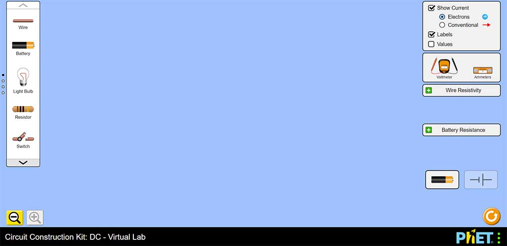
Start (새 창에서 열림)복습
이 학습 활동 시작 부분에 나열된 어휘를 복습하세요. 노트에 각 어휘를 사용하여 이 학습 활동의 핵심 개념을 설명하는 문단을 작성하세요.
자기 점검 퀴즈
이해도를 확인하세요!
다음 자기 점검 퀴즈를 완료하여 학습의 현재 위치와 집중해야 할 영역을 파악하세요.
이 퀴즈는 피드백 목적이며, 성적에 포함되지 않습니다. 이 퀴즈에 대한 시도 횟수는 무제한입니다. 충분한 시간을 갖고 최선을 다하며, 제공된 피드백을 반성하세요.
퀴즈를 눌러 이 도구에 접근하세요.